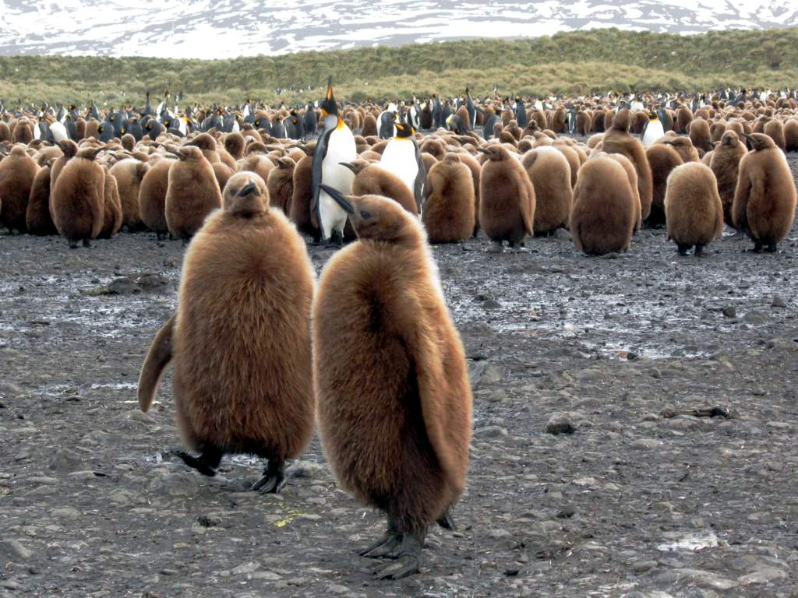

teddy penguins are a ball of cozyniess. a mixture of fleece, sherpa fabric and plush. There fur is a champagne color. They have big eyes, one on the top right and the other one on bottom left.
 "King Penguin Chicks" by D-Stanley is licensed under CC BY 2.0